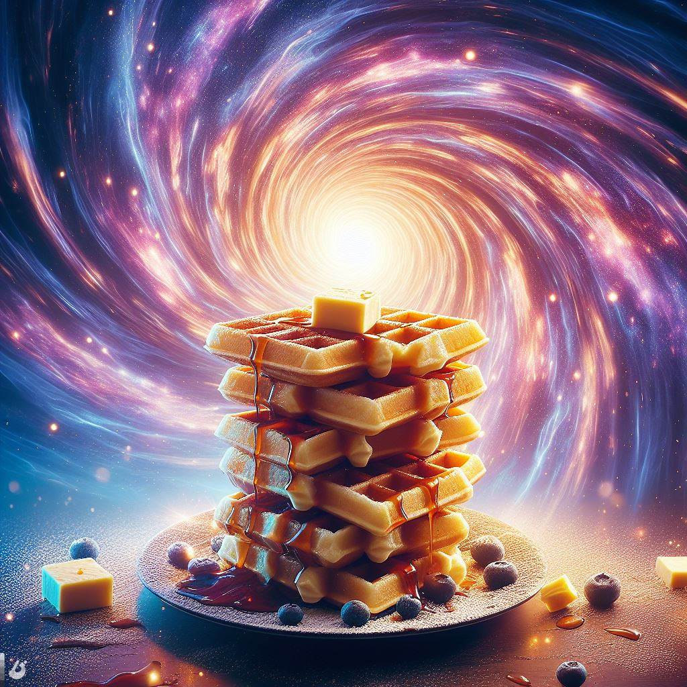

Wormhole Waffles
Wormhole Waffles: A delicious breakfast treat that can transport you to another dimension with every bite.
Ingredients
- 2 cups of all-purpose flour
- 1 tablespoon of baking powder
- 1/4 teaspoon of salt
- 1/4 cup of sugar
- 2 eggs
- 1 1/2 cups of milk
- 1/4 cup of melted butter
- 1/4 cup of wormhole essence (available at your nearest interdimensional market)
- Mix the dry ingredients in a large bowl.
- Whisk the eggs, milk, butter, and wormhole essence in another bowl.
- Combine the wet and dry ingredients and stir until smooth.
- Heat a waffle iron and spray with cooking spray.
- Pour about 1/4 cup of batter onto the iron and cook until golden.
- Repeat with the remaining batter.
Serve with your favorite toppings and enjoy your interdimensional adventure!